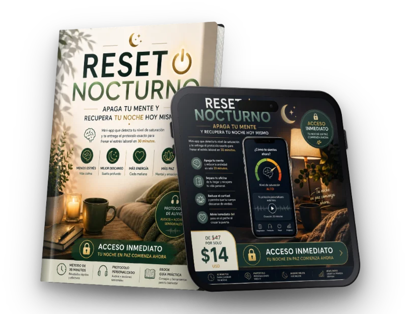
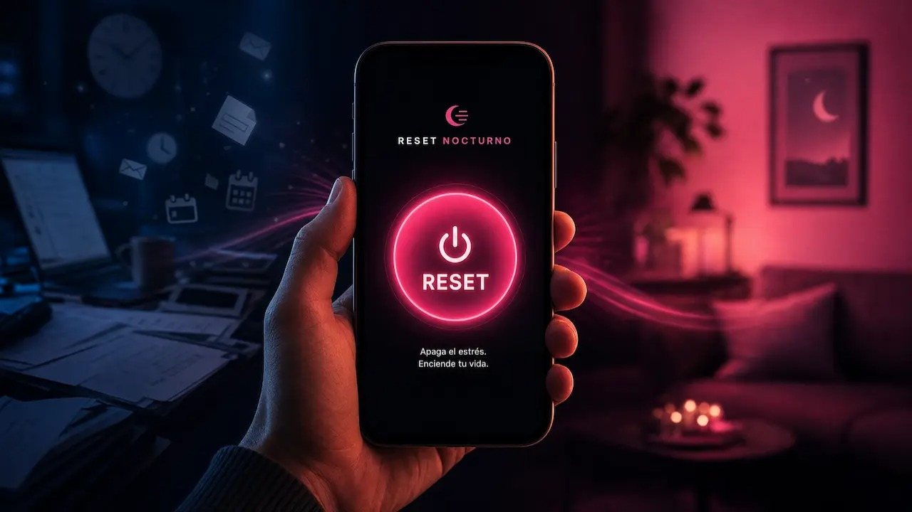

Desconecta del trabajo en 30 minutos
Reset Nocturno es una mini-app con diagnóstico, audios y una ruta guiada para cerrar tu jornada desde el celular.

Por qué meditar una hora solo aumenta tu frustración nocturna.
El atajo de 30 minutos que separa tu oficina de tu hogar.
El Secreto del Cortisol que te impide descansar aunque estés acostado.
Alivio inmediato del peso en el pecho al cruzar la puerta.
Empezar mi diagnóstico gratuito
Una experiencia guiada para usar desde tu celular, sin rutinas complicadas y a tu propio ritmo.
Una forma más sencilla de cerrar tu jornada
Beneficios
Ordena el primer paso. Responde tres preguntas breves y recibe una ruta adaptada a tu nivel de saturación percibida, el tipo de pensamientos que tienes y el tiempo disponible.
Reduce la fatiga de decidir. La mini-app te indica qué hacer a continuación para que no tengas que buscar otra técnica, video o rutina.
Desconecta de manera gradual. Combina audios guiados y pequeñas acciones sensoriales para marcar la transición entre el trabajo y tu vida personal.
Aprovecha el tiempo que realmente tienes. Puedes seguir una ruta de 10, 20 o 30 minutos según tu noche.
Usa la herramienta desde el celular. No necesitas experiencia previa ni conocimientos técnicos.
Construye consistencia. El tracker de 7 días te permite observar tu continuidad sin convertir el descanso en otra obligación.
De $ 106,00
POR APENAS
$ 14,00
Llegaste a casa, pero tu mente todavía sigue en la oficina
Apagas la computadora, cierras la puerta y te sientas a descansar
Sin embargo, sigues repasando conversaciones, pendientes y decisiones del día.
Tomas el celular para distraerte, saltas de una aplicación a otra y la noche avanza sin que sientas una verdadera transición.
No siempre necesitas otra explicación larga. Muchas veces necesitas una secuencia breve, clara y fácil de seguir cuando ya no tienes energía para decidir.
Reset Nocturno fue diseñado para acompañar precisamente ese momento: el final de la jornada, cuando quieres dejar el trabajo atrás y volver a estar presente en tu noche.

¿ESTO ES PARA MÍ?
Sientes que tu cerebro sigue trabajando aunque ya estés en casa.
Te refugias en el celular durante horas buscando un descanso que no llega.
La ansiedad del domingo por la noche te arruina todo el fin de semana.
Has intentado meditar, pero te desespera no poder dejar de pensar.
Reset Nocturno está pensado para personas que terminan su jornada con poca energía mental y quieren una guía sencilla para iniciar la desconexión.
No se trata de obligarte a “dejar la mente en blanco”
Menos decisiones. Más estructura para cerrar el día.
Reset Nocturno utiliza un Interruptor de Desconexión: una secuencia de preguntas, audio y microacciones que te ayuda a pasar de la actividad laboral a una rutina nocturna más consciente.
La mini-app no pretende diagnosticar tu estado de salud ni medir niveles clínicos.
Utiliza tus respuestas para organizar una experiencia de bienestar acorde con cómo describes tu noche y con el tiempo que tienes disponible.
CÓMO FUNCIONA EL MÉTODO
Tres pasos para comenzar tu reset esta noche
Etapa 01
1. DIAGNÓSTICO BREVE
Indica cómo te sientes al llegar a casa, qué tipo de pensamientos ocupan tu atención y cuánto tiempo tienes disponible.
Etapa 02
2. RUTA PERSONALIZADA
La mini-app organiza una secuencia de audios y acciones prácticas según tus respuestas. Recibes una ruta estándar, una ruta para fricciones laborales o una ruta breve para noches especialmente intensas.
Etapa 03
3. SESIÓN GUIADA
Sigue las indicaciones durante el tiempo disponible. Puedes utilizar el temporizador visual, reproducir los audios en orden y añadir música ambiental opcional si te ayuda a crear un entorno más tranquilo.
Todo lo que necesitas para empezar sin complicaciones
Reset Nocturno: mini-app interactiva con diagnóstico de saturación percibida, protocolos guiados, audios por etapa, temporizador de 30 minutos, música ambiental opcional y tracker de 7 días.
Oferta por tiempo limitado
Esta condición especial vence en:
Empieza hoy con acceso completo a Reset Nocturno
Recibe acceso a la mini-app interactiva y a los cuatro bonos por un pago único.
RESUMEN DE TU ACCESO
Reset Nocturno y diagnóstico interactivo
Protocolos guiados de 10, 20 y 30 minutos
Audios para acompañar las tres etapas
Temporizador visual y música ambiental opcional
Tracker de 7 días
Pack de cuatro bonos complementarios
Valor total:
$ 106,00
OFERTA POR LANZAMIENTO
Hoy puedes acceder a todo el paquete por un pago único
$ 14,00
Pago seguro por Hotmart.
Recibe tus instrucciones de acceso después de completar la compra.
Garantía incondicional de 7 días
Si lo pruebas y sientes que no es para ti, te devolvemos tu dinero. Sin preguntas incómodas. Sin trámites.
PREGUNTAS FRECUENTES
Reset Nocturno es una mini-app digital de bienestar diseñada para ayudarte a cerrar la jornada laboral con una secuencia clara de diagnóstico, audios y microacciones. Puedes utilizarla desde tu celular y avanzar a tu propio ritmo.
Está pensado para profesionales y personas con jornadas exigentes que llegan a la noche con la mente todavía ocupada por pendientes, conversaciones o decisiones del trabajo, y quieren una guía práctica para iniciar la desconexión.
Tu acceso incluye la mini-app interactiva, el diagnóstico de saturación percibida, protocolos guiados de 10, 20 y 30 minutos, audios, temporizador visual, música ambiental opcional, tracker de 7 días y cuatro bonos: Protocolo del Alivio, Generador de Cenas Nocturnas, Checklist de Desconexión y Rescatador de Crisis.
No necesitas instalar una aplicación adicional. Después de recibir el acceso, podrás abrir Reset Nocturno desde el navegador de tu celular a través de MemberApp, siempre que tengas conexión a internet.
No. La experiencia está organizada paso a paso, con indicaciones sencillas y audios de acompañamiento. No necesitas conocer técnicas de meditación, respiración o productividad para comenzar.
La ruta principal está diseñada para 30 minutos, pero también puedes elegir una versión de 10 o 20 minutos cuando tengas menos tiempo disponible. La idea es que puedas comenzar con la opción que mejor encaje con tu noche.
Hotmart enviará las instrucciones al correo utilizado durante la compra, de acuerdo con la configuración de entrega del producto. Revisa también las carpetas de spam, promociones o correo no deseado. Si no encuentras el mensaje, utiliza el canal de soporte indicado en tu comprobante de compra.
El pago se procesa a través de Hotmart. Antes de confirmar, podrás revisar el importe, la moneda, los datos de la compra y las condiciones aplicables al pedido.
Puedes solicitarlo dentro del plazo y conforme al procedimiento de garantía que aparezcan en el checkout de Hotmart. Te recomendamos revisar esas condiciones antes de completar la compra.
No. Es una herramienta digital de bienestar y hábitos. No realiza diagnósticos, no trata condiciones médicas o psicológicas y no sustituye la atención de profesionales cualificados.
Tu jornada termina. Tu noche también merece comenzar.
No necesitas añadir otra tarea complicada a tu día.
Solo necesitas una primera acción clara para marcar el cambio de ritmo.
Abre Reset Nocturno, responde el diagnóstico y empieza la ruta que mejor encaja con tu noche.